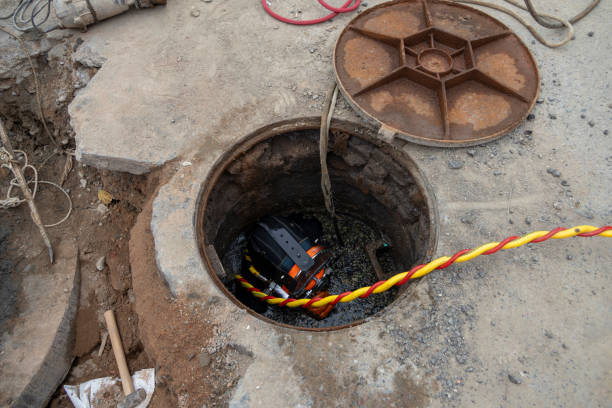

Blue Hills Connecticut
info@asapstatewideseptic.pro
Blue Hills Connecticut
info@asapstatewideseptic.pro

For efficient and reliable septic services in Blue Hills Connecticut trust our expert team for tank cleaning, repairs, and maintenance. We're your local choice for septic solutions you can count on.
Click Here To Call Us (877) 848-1711When it comes to maintaining your septic system, you need a company you can trust to deliver reliable and high-quality services. At , we specialize in comprehensive septic services for both residential and commercial properties in Blue Hills Connecticut . Our team of certified professionals is committed to ensuring your septic system operates efficiently, protecting your property and the environment.
We offer a wide range of septic solutions, including septic tank pumping, repair, installation, and maintenance. Whether you need routine maintenance or emergency services, we are here to help. Our advanced tools and eco-friendly methods ensure that your septic system is always in top condition.
By choosing , you are choosing a trusted partner that understands the unique needs of Blue Hills Connecticut residents. We are proud to be your go-to septic experts, delivering fast, affordable, and reliable services. Our team is fully licensed and insured, ensuring the highest standards of safety and professionalism for every job.
Don’t wait for a septic emergency to disrupt your life—contact us today for expert septic services in Blue Hills Connecticut . Whether you need an inspection, repair, or installation, we have the knowledge and experience to get the job done right.
Residential & commercial septic service
Quality services at affordable prices
Immediate 24/ 7 emergency services


When it comes to septic tank installation in Blue Hills Connecticut trust the experts to ensure your system is installed professionally and efficiently. At septic service, we specialize in providing top-notch septic tank services tailored to your needs. Our experienced team uses state-of-the-art equipment to offer reliable septic system installations that comply with local regulations and ensure long-term functionality.
Septic tank installation is a crucial part of maintaining a healthy home or business environment. With years of experience in the industry, we understand the importance of a well-designed and properly installed septic system. Our team conducts thorough site assessments to determine the best location for your septic tank, ensuring optimal performance and minimizing potential issues.
We offer a wide range of septic tank sizes and systems suitable for residential and commercial properties across Blue Hills Connecticut . Whether you're building a new home or upgrading your existing septic system, we ensure the installation is handled with precision and care. Our skilled technicians take the time to explain your options, helping you make an informed decision.
At septic service, we prioritize customer satisfaction and strive to deliver prompt, professional septic tank installation services in Blue Hills Connecticut and surrounding areas. Contact us today for expert septic services that guarantee peace of mind.
Residential & commercial septic service
Quality services at affordable prices
Immediate 24/ 7 emergency services
Compliance with local and state regulations is crucial for any commercial property with a septic system. At septic service, we provide expert septic system compliance services that include inspections, evaluations, and maintenance to help ensure your property remains compliant with regulations in Blue Hills Connecticut .
Our team stays up-to-date with local codes and regulations, offering guidance that helps you avoid fines and penalties. We conduct thorough evaluations of your system and provide all necessary documentation, ensuring that you are equipped to maintain compliance.
Investing in septic service for your compliance needs means employing a dedicated team that focuses on transparency and customer satisfaction. We work with you every step of the way to ensure your septic system meets all legal requirements while functioning efficiently.

Regular inspections are vital for the proper functioning of septic systems in commercial buildings. At septic service, we specialize in septic system inspections for commercial properties identifying potential issues before they escalate.
Our skilled inspectors utilize advanced technology to conduct thorough evaluations, providing you with detailed reports on system performance and maintenance suggestions. We focus on minimizing disruptions to your business by scheduling inspections at your convenience. Schedule with septic service for dependable inspections that support the longevity of your septic system.

Effective sewage treatment is essential for maintaining a safe and clean environment in any business. At septic service, we offer tailored sewage treatment systems for businesses in Blue Hills Connecticut designed to meet the specific requirements of various industries.
Our engineered systems comply with all regulations while offering advanced treatment technologies. With a focus on efficiency and environmental responsibility, we educate businesses on best practices for managing their sewage effectively. Choose septic service for innovative sewage treatment solutions that prioritize your business needs.

At septic service, we understand that each property has unique septic needs. We provide specialized septic services tailored to a variety of scenarios, ensuring each customer's needs are met.
Whether you require septic tank location services, odor control solutions, or maintenance for aerobic septic systems, our team of experts is equipped to assist you. We pride ourselves on personalized service and thorough assessments, ensuring no detail is overlooked. Contact septic service for specialized septic solutions designed just for you.

Knowing the precise location of your septic tank is vital for efficient maintenance and repairs. Our septic tank location services in Blue Hills Connecticut utilize advanced technology to accurately identify and map out your septic tank’s position, minimizing the guesswork often associated with locating buried tanks.
We prioritize efficient service that saves time and resources. Rely on our expertise to facilitate easy access for maintenance and inspections, ensuring your system remains in optimal condition.
Unpleasant odors around your septic system can indicate deeper issues that need addressing. At septic service, we offer effective septic tank odor control solutions in Blue Hills Connecticut to restore comfort and safety to your property.
Our team identifies the source of odors through thorough inspections and provides targeted solutions to eliminate them permanently. We use eco-friendly products and methods to ensure your property remains healthy and safe. Choose septic service for reliable odor control in your septic system.

Rural properties often have unique septic needs, especially concerning waste management. At septic service, we offer specialized septic system pumping services in Blue Hills Connecticut designed for rural properties, ensuring efficient waste management tailored to your lifestyle.
Our experienced team understands the importance of timely pumping to avoid system failures and provide personalized service based on your property's requirements. We prioritize eco-friendly practices and transparent pricing, ensuring a hassle-free experience. Trust septic service to maintain your septic system and promote a healthy environment.

Rural properties require specialized septic solutions due to their unique challenges. At septic service, we provide septic system pumping services specifically designed for rural properties . We understand the conditions and regulations governing rural septic systems, ensuring that our services are compliant and effective.
Our team uses advanced pumping equipment to handle the demands of rural installations, providing reliable waste removal that prevents backups and maintains system efficiency. We also offer flexible scheduling options to accommodate the often-variable use of septic systems in rural settings.
Investing in our septic system pumping services means selecting a team that prioritizes the needs of rural property owners. We are dedicated to maintaining your system's functionality so you can enjoy the peace and beauty of rural living without worry.

For commercial kitchens and food service businesses, grease traps are essential for preventing clogs and backups. At septic service, we offer professional grease trap cleaning and maintenance to ensure compliance and efficiency. Our team is trained in the best practices for grease trap servicing, providing thorough cleaning that minimizes odors and prolongs the life of your system. By choosing our services, you are protecting your business from plumbing issues and maintaining a sanitary environment for your operations.
Years Experience
Expert Technicians
Satisfied Clients
Compleate Projects
At ASAP State Wide Septic, we understand the importance of a reliable septic system for your home or business. Serving all cities in Blue Hills Connecticut we have built a reputation for providing top-tier septic services that keep your system running smoothly year-round. Whether you're in need of regular maintenance, septic tank pumping, or emergency repairs, our team is committed to delivering exceptional service every time.
What sets us apart is our dedication to customer satisfaction and our extensive industry experience. Our team of highly trained professionals uses state-of-the-art equipment and follows the best practices in the septic industry to ensure a job done right. We prioritize efficiency, providing timely, affordable solutions that minimize disruption to your daily life.
Our eco-friendly approach ensures that your septic system operates in the most sustainable way possible. We aim to extend the life of your system, save you money, and avoid costly repairs down the line by offering routine maintenance and thorough inspections.
With ASAP State Wide Septic, you get a company that is passionate about service, values integrity, and offers a customer-first approach. We are available around the clock, prepared to handle any emergency with urgency and precision. When you choose us, you're choosing peace of mind, knowing your septic system is in the hands of the best in Blue Hills Connecticut .
Trust ASAP State Wide Septic for reliable, affordable, and efficient septic solutions today!
Installing a septic tank is a significant investment for any homeowner. It's crucial to choose a reliable service that understands local regulations and environmental considerations. At septic service, we provide comprehensive septic tank installation services ensuring your system is designed to meet your household needs effectively.
Our certified specialists assess your property to determine the best tank size and location. We work with high-quality materials and follow industry standards to guarantee a durable installation that lasts for years. Furthermore, we educate our clients about proper tank use and maintenance to prevent future complications. Our combination of technical expertise and excellent customer service sets us apart as the leading choice for septic tank installation .
When your septic tank encounters problems, quick and efficient repair is essential to prevent further issues and hefty repair costs. We specialize in septic tank repair services tailored to the needs of homeowners in Blue Hills Connecticut . Our skilled technicians can diagnose a range of common and complex septic issues including leaks, clogs, and structural damage.
Choosing our septic tank repair services means you benefit from our commitment to use high-quality materials and proven techniques. We provide thorough inspections and reports, offering you a detailed understanding of the issues at hand. With our reliable service, you can trust that we will restore your septic system to proper function without unnecessary delays.
Is your septic tank showing signs of trouble? At septic service, we specialize in septic tank repair services to keep your system running smoothly. Our experienced technicians are trained to diagnose common septic tank issues such as leaks, blockages, and improper drainage. With a detailed inspection and assessment, we identify the root cause of the problem and offer tailored solutions that restore function quickly and effectively.
Choosing us for your septic tank repair means you are opting for professionalism and reliability. We utilize state-of-the-art tools and techniques to perform repairs promptly, minimizing disruption to your daily life. Our team is fully licensed and insured, giving you peace of mind that you are working with qualified professionals .
Additionally, our commitment to customer satisfaction shines through in our transparent pricing and excellent communication throughout the repair process. We explain what needs to be done and why, ensuring you make informed decisions about your septic system. Trust septic service for effective and reliable septic tank repair services .
The health of your septic system largely depends on regular cleaning and maintenance, and our services in Blue Hills Connecticut are designed to extend the lifespan of your system while preventing harmful backups. We provide comprehensive cleaning solutions that include jetting, descaling, and preventive maintenance checks to keep your system functioning optimally.
Our trained professionals use the right techniques tailored to your specific system's needs. Ensuring your septic tank is clean is not just about good practice, it’s about safeguarding your home and family’s health. With our unwavering commitment to customer satisfaction, we guarantee that your system is treated with utmost care and professionalism.
A septic system inspection is a vital part of home ownership, particularly if you're purchasing or selling a property. At septic service, we specialize in septic system inspections in Blue Hills Connecticut providing comprehensive evaluations to identify any potential issues that could affect the system's longevity or compliance with local regulations.
Our licensed professionals use advanced diagnostic tools to assess the health of your septic system thoroughly. We provide clear and detailed reports, empowering you to make informed decisions regarding repairs or replacements. Our commitment to transparency and customer education makes us the preferred choice for septic system inspections . With septic service, you can ensure peace of mind regarding your waste management system.
When repairs are no longer a viable option, a septic tank replacement is necessary for maintaining a healthy drainage system. Our septic tank replacement services in Blue Hills Connecticut offer you a seamless transition from old to new. We guide you through the entire process, assisting with selecting the right size and type of tank that complies with local regulations and meets your home’s specific needs.
We strive to minimize disruption during the replacement process and ensure the installation is done right the first time. Our commitment to quality workmanship means that you will enjoy years of reliable service from your new septic system. Trust in our expertise to deliver a smooth and stress-free experience.
Sometimes, septic systems reach the end of their lifespan and require complete replacement. At septic service, we specialize in septic tank replacement services, ensuring a hassle-free transition to a new system. Our expert team assesses your current system’s condition and identifies the best replacement options tailored to your land and needs.
We guide you through the entire replacement process, from initial assessment and permitting to installation and post-installation check-ups. Our professionals are trained to handle the complexities of replacing a septic tank, ensuring all work is performed to industry standards and local regulations.
Choosing septic service for septic tank replacement means investing in quality. Our installations focus on high-quality materials and workmanship, ensuring longevity and reliability. We prioritize your satisfaction, ensuring that your replacement tank serves your property effectively for years to come.
Is your septic system acting up? Our expert troubleshooting services at septic service are designed to identify and solve any issues with your septic system. Our trained professionals utilize a systematic approach to diagnose problems, including drains that are slow to empty, unpleasant odors, and backups. With our pinpoint accuracy in diagnosis, we provide effective solutions tailored to your specific issues, ensuring smooth operation. By putting your trust in us, you’re choosing a reliable partner for maintaining your septic system's health.
Is your septic system showing signs of malfunction? At septic service, we specialize in septic system troubleshooting, diagnosing issues that threaten your home’s sanitation. Our experienced technicians are skilled at identifying common problems such as slow drains, foul odors, and abnormally wet areas in your yard.
Through a step-by-step diagnostic process, we isolate the issue, whether it’s a tank problem, line clog, or drain field failure. We work efficiently to determine the best course of action, repairing what can be fixed and recommending replacements when necessary.
Choosing septic service means you are selecting a team that values transparency and communication. We explain every step of the troubleshooting process and discuss your options, ensuring you have a clear understanding of your septic system’s health and required interventions.
Septic backup can be a nightmare for homeowners. At septic service, we provide specialized services focused on septic backup prevention and effective solutions in Blue Hills Connecticut . Our team is dedicated to educating homeowners on proper system usage and maintenance to avoid frustrating backups.
We offer comprehensive inspections to identify potential risks and provide tailored maintenance plans. In case of emergencies, our rapid response team can quickly address backups and resolve issues to prevent further damage. Ultimately, our commitment to excellence and customer satisfaction sets us apart as the leading provider of septic backup prevention solutions in Blue Hills Connecticut .
In the heart of any thriving business lies a commitment to excellence, and that includes maintaining an effective septic system. Our commercial septic services are tailored to meet the demands of businesses of all sizes, providing everything from routine maintenance to emergency repairs.
Our team understands the complexities involved in commercial septic systems, and we employ a proactive approach to ensure compliance with health and safety standards. With our rapid response times and commitment to quality, we help ensure your business operations run smoothly without interruption.
Installing a robust and compliant septic system is crucial for any commercial property. At septic service, we excel in commercial septic system installation in Blue Hills Connecticut ensuring your business has a reliable waste management solution tailored to your needs.
Our experts conduct thorough site evaluations to determine the optimal system design that complies with local codes and regulations. We pride ourselves on using high-quality materials and advanced technologies for installations that stand the test of time. By choosing septic service, you'll benefit from our knowledge and experience, ensuring your septic system meets current standards and operates efficiently.
Regular septic tank pumping is vital for commercial properties to prevent backups and ensure a smooth operation. Our commercial septic tank pumping services are designed for businesses seeking prompt and reliable waste management solutions. We offer expertly executed pumping services that minimize disturbances to your daily operations.
Our technicians are prompt, professional, and equipped with the latest tools to effectively pump and maintain your septic tank. Choose us for on-time and efficient service that adheres to local regulations and industry standards, ensuring your business remains compliant and operational.
For restaurants and commercial kitchens, proper grease trap maintenance is crucial for keeping your plumbing and septic systems functioning correctly. Our grease trap and commercial waste removal services are tailored to meet the rigorous demands of the food service industry, ensuring compliance and safeguarding your business's reputation.
By choosing our services, you benefit from our expertise in managing hazardous waste responsibly and in accordance with local regulations. We pride ourselves on delivering effective solutions to keep your systems clear and compliant, ensuring smooth operations for your business.
Every business has unique waste management needs. At septic service, we offer septic system design and consultation services tailored for commercial properties. Our experts provide in-depth consultations to design customized septic systems that meet your specific operational demands while adhering to local regulations. With our comprehensive expertise, we ensure your system is both efficient and compliant. By partnering with us, you gain a valuable ally in optimal waste management for your business.
Designing an efficient septic system is crucial for any commercial operation. At septic service, we offer specialized septic system design and consultation services tailored specifically for businesses. Our experienced engineers and technicians work closely with you to understand your facility’s needs, ensuring the design aligns with both operational efficiency and regulatory compliance.
Our design process considers all factors, including soil type, water usage, and waste type. We strive to deliver a system that maximizes functionality and minimizes potential environmental impacts. With a meticulous focus on detail and compliance, we ensure your new septic system meets the highest standards.
By choosing septic service for septic system design and consultation, you gain a partner committed to your success. Our professional guidance, ongoing support, and dedication to quality service position you for long-term satisfaction.
Large buildings require sophisticated waste management solutions, and our high-capacity septic systems in Blue Hills Connecticut are designed to accommodate significant wastewater loads safely and effectively. We specialize in designing and installing systems tailored to meet your building's needs, ensuring that your investment is worthwhile.
By choosing us, you can expect an expert evaluation of your requirements and a consultation regarding optimal system specifications. Our commitment to high-quality materials and workmanship guarantees a robust and effective solution, keeping your operations running seamlessly.
Large buildings, such as multi-family residences, hotels, and office complexes, require robust septic solutions to handle increased waste flow. At septic service, we specialize in designing and installing high-capacity septic systems that meet the demands of large facilities .
Our systems are designed with efficiency and regulatory compliance in mind, ensuring that your property’s waste is managed effectively without risking backups or environmental issues. We work closely with you through the design and installation phases, ensuring your new system aligns with your property’s specific needs.
Choosing septic service for high-capacity systems means investing in quality and reliability. Our expert installations are backed by years of experience and a commitment to excellence, ensuring your large building operates smoothly for years to come.
Proper maintenance of your septic system is essential to ensure its longevity and avoid costly repairs. At septic service, we specialize in professional septic tank pumping and cleaning services for residential and commercial properties in Blue Hills Connecticut . Our expert team is committed to delivering top-notch services that keep your septic system running smoothly.
Septic tanks should be pumped every 3 to 5 years to prevent clogs and system malfunctions. Whether you need a one-time service or regular maintenance, we offer flexible scheduling to meet your needs. Our septic cleaning services include removing waste, inspecting your system for any issues, and providing a thorough cleaning to ensure proper functionality.
By choosing our septic tank pumping services, you are investing in the health and efficiency of your entire plumbing system. We utilize state-of-the-art equipment and eco-friendly solutions to minimize disruption to your property while delivering exceptional results. Our licensed and experienced team will handle all aspects of your septic maintenance, from pumping to cleaning, ensuring you receive a hassle-free service.
Don’t wait for a system failure to take action—call septic service today for reliable septic tank pumping and cleaning services in Blue Hills Connecticut . We're here to keep your septic system in excellent condition and avoid unnecessary emergencies.
Blue Hills is a community in Hartford County, Connecticut, encompassing the northwest corner of the city of Hartford and the southeast corner of the town of Bloomfield. The Bloomfield portion is listed by the U.S. Census Bureau as a census-designated place (CDP), with a population of 2,762 at the 2020 census.
Typically, it takes 1-2 hours. State Wide Septic ensures quick and thorough pumping .
Immediately stop water usage and contact State Wide Septic for emergency services .
Yes, State Wide Septic specializes in diagnosing and repairing field line issues across Blue Hills Connecticut .
Yes, State Wide Septic offers customizable maintenance plans for homeowners and businesses .
You can reach State Wide Septic by phone or through our website to schedule services anywhere in Blue Hills Connecticut .
Avoid flushing grease, wipes, and non-biodegradable items. Contact State Wide Septic for more tips in Blue Hills Connecticut .
Yes, we offer thorough septic inspections for homebuyers to ensure the system is in good condition.
Yes, State Wide Septic provides free, no-obligation estimates for all septic services in Blue Hills Connecticut .
With proper care, septic systems can last 20-30 years. State Wide Septic offers services to extend system life .
Absolutely. State Wide Septic uses eco-friendly practices to ensure safe and sustainable waste management .
Slow drains, gurgling sounds, and foul odors often indicate a full tank. Contact State Wide Septic for pumping services .
Yes, State Wide Septic provides environmentally safe treatments for optimal system performance in Blue Hills Connecticut .
The cost varies based on the tank size and condition. Contact State Wide Septic for a competitive quote .
Yes, State Wide Septic offers 24/7 emergency septic services across Blue Hills Connecticut to address urgent issues like backups or system failures.
Backups can result from clogs, improper maintenance, or system overload. State Wide Septic can diagnose and resolve these issues .
Regular maintenance prevents costly repairs and extends system life. Schedule with State Wide Septic today.
Yes, State Wide Septic has the expertise and equipment for large-scale residential or commercial projects in Blue Hills Connecticut .
State Wide Septic provides comprehensive septic services including installation, repair, pumping, and maintenance for residential and commercial systems.
Call or book online with State Wide Septic to schedule convenient septic maintenance anywhere in Blue Hills Connecticut .
Yes, State Wide Septic provides specialized services for businesses in Blue Hills Connecticut including grease trap cleaning and large-scale system maintenance.
The size depends on household size and water usage. Contact State Wide Septic in Blue Hills Connecticut for expert recommendations.
Yes, State Wide Septic assists with permitting and ensures compliance with local Blue Hills Connecticut regulations.
Common signs include slow drains, foul odors, pooling water, and backups. If you notice these issues in Blue Hills Connecticut call State Wide Septic for prompt service.
We recommend pumping your septic tank every 3-5 years, depending on household size and usage. Contact State Wide Septic for an assessment tailored to your needs .
Yes, our State Wide Septic team is fully licensed and certified to provide top-quality services in Blue Hills Connecticut .
Yes, State Wide Septic specializes in installing new septic systems in Blue Hills Connecticut ensuring compliance with local regulations.
We provide septic services throughout all cities and towns offering reliable solutions statewide.
Regular maintenance, avoiding non-biodegradable waste, and scheduling inspections with State Wide Septic can help prevent issues .
Yes, State Wide Septic offers efficient septic tank replacement services throughout Blue Hills Connecticut .
State Wide Septic ensures efficient and compliant replacements tailored to your needs .
"Highly recommend ASAP State Wide Septic! Their technicians in Blue Hills Connecticut were friendly, skilled, and completed the job in no time. Will definitely use them again."
Profession
"I’ve used a few septic service companies, but ASAP State Wide Septic stands out! Their team in Blue Hills Connecticut was friendly and did a fantastic job. Highly recommend!"
Profession
"Professional, fast, and reliable! ASAP State Wide Septic provided outstanding service in Blue Hills Connecticut and made our septic system troubles disappear. A+!"
Profession
Blue Hills CT septic service Pros
(877) 848-1711
info@asapstatewideseptic.pro
09.00 AM - 09.00 PM
09.00 AM - 12.00 PM